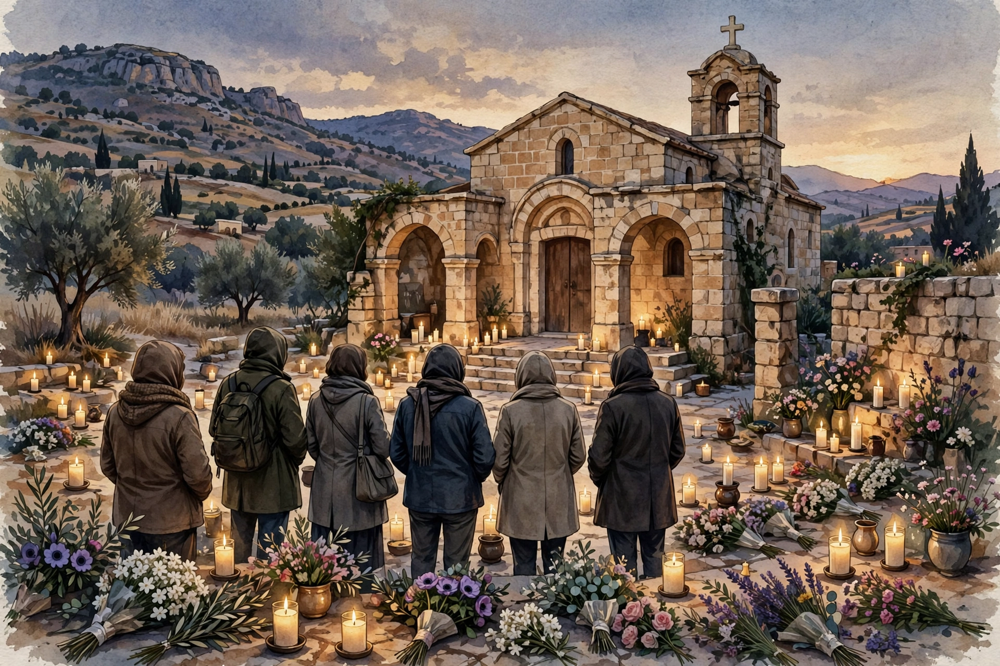

Persecuted ChurchIglesia Perseguida
Three Arrested After Funeral Massacre at a Church in JordanTres detenidos tras la masacre en un funeral en una iglesia de Jordania
Jordanian security forces arrested three men on October 26 over the October 23 shooting at a funeral in Karak that killed nine mourners and injured dozens, an attack the government has called terrorism.Las fuerzas de seguridad jordanas detuvieron el 26 de octubre a tres hombres por el tiroteo del 23 de octubre en un funeral en Karak, que mató a nueve personas e hirió a decenas, un ataque que el gobierno calificó de terrorismo.